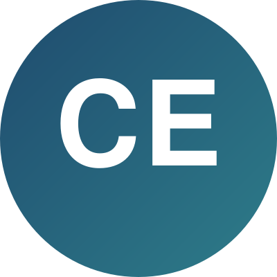

Chidozie Ezeanolue

Summary
Computer Science graduate learning full-stack web development.
Comfortable with HTML, currently learning CSS, with a basic
foundation in JavaScript, Git, and Solidity. Currently interning
as a web developer.
Education
- Bachelor of Science in Computer Science - Enugu State University of Science and Technology (2019 to 2023)
Experience
UI/UX Designer (Intern), BlueTag Technologies Limited
Enugu, Nigeria | Sep 2024 to Aug 2025
- Designed responsive web and mobile interfaces across several client products.
- Built and maintained design systems and style guides so the team worked from one source of truth.
- Ran usability sessions, captured feedback, and reworked flows that were tripping users up.
Skills
- HTML
- CSS (learning)
- JavaScript (learning)
- Git & GitHub
- Solidity (basics)
Other